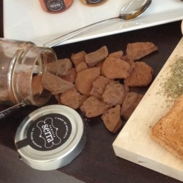

Normalmente, cuando tomas naranjas de postre o en zumo, lo habitual es tirar la cáscara. Sin embargo, ¿sabías que tiene una gran cantidad de beneficios que no deberías dejar escapar?
Puedes utilizar la cáscara como una solución casera de medicina natural por sus múltiples propiedades curativas, usarla en platos de postres, bebidas y comidas, y hasta a modo de ambientador o ¡como repelente de insectos!
Cáscara de naranja como remedio para la salud
La cáscara de naranja tiene varios beneficios para la salud:
- Favorece la digestión. Tómala en infusión para aliviar problemas de estómago e intestinales, ya que gracias a su alto número de fitonutrientes y flavonoides (tiene más que la pulpa interna), tiene grandes propiedades antiinflamatorias.
- Contra las infecciones. La cáscara de naranja es rica en antioxidantes naturales (vitaminas A, como todas las frutas y verduras de color naranja, y vitamina C por supuesto) que favorecen el buen funcionamiento del sistema inmunológico y además combaten infecciones.
- Ayuda a bajar el colesterol. La cáscara de naranja contiene hespetidina, un tipo de flavonoide con grandes propiedades para metabolizar la grasa en sangre, y reducirla para facilitar su eliminación.
- Para perder peso. Por su capacidad para favorecer la eliminación de grasas, la cáscara de naranja en infusión, es recomendada para acompañar la dieta.
Lo más sano:
¿Cómo hago infusiones de cáscara de naranja?

Hacer infusiones de cáscara de naranja es tan fácil como hervir agua para una taza, rallar la cáscara de naranja y meterlo en el agua (utiliza sólo una cucharada y media, que es la medida suficiente para una infusión). Déjalo hervir durante cinco minutos y que repose otros tres. ¡Y ya está!

Ahora en verano puedes añadirle unos cubitos de hielo y un poco de canela molida o en rama, un poco de miel si te gusta dulce. Fresquito, sano y delicioso.

lo más goloso:
¿Cómo tomar la cáscara de naranja como postre?
Si quieres beneficiarte de las propiedades de la cáscara de naranja y eres goloso o amante del chocolate, os recomendamos nuestras Delicias de Naranja y Chocolate, elaboradas artesanalmente a base de la cáscara natural de las naranjas y bañadas en cacao. Es como una golosina pero ¡mucho más sana!

Delicias de Chocolate y Naranja – Familia Serra
La naranja confitada o en almíbar es otra forma golosa de tomar la cáscara de naranja. Puedes comerla tal cual, o añadirle azúcar o chocolate. También te servirá para adornar postres, suavizar los quesos más fuertes y darles un toque especial.

La mermelada de naranja se hace utilizando también la cáscara. Podemos destacar que para elaborar la mermelada puede utilizarse la cáscara triturada junto a la pulpa o hacerlo de un modo más elaborado, como la Mermelada de Naranja al Estilo Inglés. En este tipo de mermeladas la cáscara se corta a trocitos alargados y finos dando lugar a una mermelada más gelatinosa.
Debes tener en cuenta que las naranjas elegidas para confitar sean naturales y de primera calidad, tanto por el grosor de la piel, su nivel de amargor y el grosor de la parte blanca de la naranja. Al ser naturales, como las nuestras, evitas ingerir conservantes ni aditivos o restos de procesos químicos.

Corteza de Naranja para el hogar
La cáscara de naranja también sirve de ambientador natural, que junto con la canela, por ejemplo, tiene un olor buenísimo. Vacía la cáscara de los restos blandos, córtala en trocitos, y déjalo secar en un plato, mientras vaya dando aroma a tu casa.

También parece que la corteza de naranja funciona como repelente de insectos. La cáscara de naranja contiene un compuesto llamado pineno, que tiene propiedades insecticidas, y que debe de dejar la casa libre de mosquitos. Si es así, será una buena alternativa a los químicos nocivos que pueden perjudicar a los niños o a tu mascota (esto todavía no lo hemos probado, ¡a ver si nos atrevemos está noche!).

Quizás también te interesa:


Que rica la torta de concha de naranja y los pasteles agregándoles huevos y quesos y metiéndolo en el horno, pero hay que enjuagarlos unas 10 veces con agua caliente para quitarles primero lo amargo
Gracias Rita, nos alegramos de que te haya gustado nuestro post 🙂
Hola, me he pasado por el post y me a encantado. Muchas gracias por los consejos.
Yo me como la naranja y limones a mordidas, como si fuera manzana, sin pelar, solo la lavo y listo va para dentro. Solo me queda una duda: ¿El comerla de esa forma, mi aparato digestivo aprovecha todos los nutrientes de la naranja? o, es mas eficaz en infusión?
Hola Gustabf, si te comes la naranja con la piel y la digieres bien, suponemos que aprovechas igualmente todos los nutrientes. Saludos
Hola Carmen! Soy Luz de Playa del Carmen Mexico y me encanta todo lo que se puede hacer con la cascara de la naranja. Yo tengo un pequeño negocio de Jugos de naranja y limón natural, el problema es que a veces no tengo como desechar la cascara y se me ha vuelto un problema. Mis maquinas cortan y exprimen pero dejan algo de pulpa en la cascara, lo hago con un pequeño grupo de chicos autistas que algunos son miembros de mi familia y me parece maravilloso poder darle uso a la cascara pues se la puedo donar a el centro donde todos ellos atienden diario.
Que me recomiendas, mermeladas o se podrá hacer polvo para infusiones
Hola Luz, en primer lugar darte las gracias por leernos y por la labor tan bonita que haces. Puedes probar a hacer mermeladas, aunque seguramente quedará un poco amarga. Lo que comentas de polvo para infusiones está muy bien, o incluso puedes usar ese polvo para repostería o hacer granizados. Enhorabuena por tu negocio ¡que vaya muy bien!
Buenos días, disculpe, como haría para importar naranjas, le escribo desde Quito-Ecuador
Fernando Guachamin
0986515099
Hola Fernando, lo sentimos pero nosotros somos una empresa familiar pequeña, no tenemos infraestructura para poder enviar naranjas a Ecuador. De todos modos gracias por su interés.
Cuando no estábamos en la Union Europea y exportábamos naranjas al entonces mercado común , en las cajas de naranjas , se debía poner si tenían la piel tratada, hay países que prohíben por ley el tratamiento de la piel de la naranja . ¿ Donde se puede comprar naranjas sin tratar?
Hola Juanfran, nosotros no añadimos ningún tipo de tratamiento a las naranjas, ni para su maduración, ni para darles color ni para su conservación. Recolectamos las naranjas y las enviamos el mismo día para que el cliente las reciba recién recolectadas y sin tratamientos, directamente del campo y naturales. Saludos
Me comenta gente que trabaja en el mundillo de cítricos que para que parezcan todas brillantes y bonitas se les echa mucha porquería en la piel (tipo barnices); también tengo curiosidad por los fertilizantes y plaguicidas que usáis vosotros; entiendo que no son ecológicos puesto que no tenéis el sello aún.
Hola María,
Lo que comentas son dos cosas muy distintas. Por un lado está el modo de cultivo y por otro los tratamientos post-cosecha. Lo que realmente afecta a los cítricos son esos tratamientos post-cosecha, ya que llegan incluso a cambiar el sabor de la fruta.
En nuestro caso esperamos a que los cítricos estén en su momento idóneo de maduración para recogerlos y enviarlos directamente al consumidor. Recogemos la fruta, hacemos una selección manual por aspecto, la encajamos y la enviamos para que llegue al día siguiente al destino. Así de sencillo.
En el caso de los almacenes el proceso es más complejo. Las naranjas se recogen estando verdes para almacenarlas en cámaras frigoríficas y que aguanten el tiempo necesario según la demanda del mercado. Al recogerse verdes, no tienen la cantidad de azúcar que deberían, por lo que su sabor distará mucho del que puede tener una naranja recogida cuando ha madurado en el árbol. En las cámaras frigoríficas consiguen sacarle el color naranja a la piel, pero por dentro seguirá sin madurar.
Proceso de recogida, almacenamiento y venta de las naranjas de venta en supermercados:
1. Se recogen del árbol (algunas veces estando todavía verdes).
2. Al llegar al almacén se les da una ducha con agua y un fungicida para limpiar y desinfectar.
3. Se almacenan en cámaras frigoríficas donde se les saca el color naranja de la piel en caso de haberlas recogido verdes.
4. Al sacarlas de la cámara entran en una balsa de agua para lavarlas. Aquí puede ser agua y jabón y en el caso de no haber puesto fungicida antes de meterlas en la cámara, lo ponen en esa balsa.
5. Después de la balsa pasan por un túnel de secado donde con se secan con aire caliente.
6. Una vez secas se les aplican ceras para darles brillo y que tengan una apariencia más uniforme, bonita y brillante, de modo que se disimulan muchas de las imperfecciones de la piel. Si no se les ha puesto fungicida en todo el proceso, también se puede poner en el momento de aplicar las ceras.
Los fungicidas que les aplican unido a un largo tiempo que pasan almacenadas en la cámara hace que las naranjas tomen un sabor raro, como a medicina. Si se han recogido verdes nunca llegarán a tener el zumo y sabor que deberían.
En cuanto al otro punto, las naranjas que cultivamos no son de agricultura ecológica, ya que no tenemos los certificados necesarios para ello. Las naranjas que cultivamos no son ecológicas, son naturales. Son naranjas como cultivaba mi padre y el padre de mi padre, es decir, como las que se han cultivado desde siempre. La agricultura ecológica es algo moderno, que ha surgido como extremo radical a la fruta que se vende en los mercados y que tienen un montón de tratamientos, tanto durante el crecimiento de la naranja como después de su recogida. Sin embargo, lo que nosotros vendemos es un término medio: una naranja cultivada como siempre, madurada en el árbol de forma natural y recogida y enviada el mismo día, de modo que no tienen ningún tratamiento químico para su maduración, coloración ni conservación, pero sin llegar al extremo de la agricultura ecológica.
En la agricultura ecológica también se usan fertilizantes y fungicidas, lo que pasa es que tienen otros nombres. Sin embargo, hay muchos productos convencionales que no están autorizados en la agricultura ecológica y que no son tóxicos para humanos.
Se tiene en mente que un producto ecológico es más caro pero es de mejor calidad, pero no es así. Es más caro porque la producción ha caído en picado porque han usado métodos de producción obsoletos, que son los que autoriza la agricultura ecológica. Las propiedades nutricionales no son mayores ni es mejor para el medio ambiente. Y cuando han hecho ensayos de doble ciego de sabor, no necesariamente es mejor el de agricultura ecológica.
Como te comentaba antes, una fruta está buena si se coge en el punto de maduración idóneo y da igual que sea ecológica o de agricultura convencional.
Si tienes curiosidad acerca de los alimentos ecológicos, te recomiendo que leas estos dos artículos:
http://www.abc.es/sociedad/20150826/abci-mitos-comida-ecologica-transgenicos-201508251925.html
http://www.lavanguardia.com/salud/20110720/54185838652/j-m-mulet-lo-ecologico-no-es-mas-sano-ni-mas-bueno-para-el-medio-ambiente.html
¿Y si corto en pedacitos una naranja en entera (con cascara) y la pongo en la licuadora con un poco de agua y lo bebo?
Hola Manuel, si lo prefieres y te gusta también lo puedes hacer así, aunque te resultará más amarga ya que no quitas la parte blanca.
ES BUENISIMO YO LO HAGO. ME RESULTA PARA LOA PIEL APARATO DIGESTIVO.
Le puedes colocar directo al te, las cáscaras de naranja,muchas gracias
Hola, quiero saber si la naranja, mandarina, limón y toronja al ser tostada y molida pierde propiedades.Gracias
Hola Jose Luis, como cualquier otro alimento, al someterlo a altas temperaturas pierden parte de sus propiedades. Saludos
Me exprimo un jugo natural de naranja con cáscara y todo, es correcto hacerlo?! Besos
Hola Laura, depende de gustos. Si te gusta, perfecto, sólo te recomiendo que enjuagues antes la naranja para eliminar el polvo. Saludos!
yo solo hiervo la cascara de naranja y me tomo el te estare asiendo bien o es necesari comer la cascara? me podria responder mi pregunta por favor
Hola Israel, hirviendo la cáscara y tomándote la infusión lo estás haciendo prefecto, no hace falta comerte la cáscara. Saludos!
La cáscara no porque ya despidió todo en el té
como prepararla para quitarme los puntos negros y el acné ?
Hola Kelly, te dejo un enlace en el que encontrarás un truco casero para elaborar una mascarilla para el acné a base de cáscara de naranja. Recuerda, que cuanto más natural sea la naranja mejor, porque no llevará ningún producto químico en la piel. http://trucosdebellezacaseros.com/naranja-para-acabar-con-el-acne/
hola, la infucion de cascara de naranja, sirve para las alergias respiratorias? por que fue lo que me dijeron que tomara
Hola paulina, así es, la cáscara de naranja ayuda a limpiar los pulmones y posee propiedades antihistamínicas. Una buena opción para tomar cáscara de naranja y beneficiarse de sus propiedades es en infusión.
Carmen, excelente post! La cáscara de naranja también sirve para saborizar algunas infusiones. Si le pones cáscara de naranja a un té con un poquito de jengibre, te haces una bebida energizante y muy sabrosa!! Excelentes trucos! Para implementar 🙂
Muchas gracias por tu consejo Siendo Saludable, lo pondremos en práctica!
NO TIRES EL AGUA DE LA COCCION DE LAS CASCARAS PONELE MIEL O ALMIBAR Y DEJALA ENFRIAR, LUEGO PONLE AGUARDIENTE U OTRO POCO LICOR Y DEJALA ENV¿FRIAR Y REPOSAR, MIENTRAS MAS TIEMPO MAS RICO QUEDA COMO BAJATIVO O APERITIVO, PUEEDES DEJARLE UNA LAMINAS DE CASCARA CONFITADA PARA DARLE MAYOR SABOR Y DECORARLO.
Muchas gracias por tu consejo Patty, lo pondremos en práctica! 🙂
Hola he estado resfriado y me preparé un jugo con dos zanahorias y una naranja entera la corte y la puse en la procesadora
En que favorece la cáscara es amarga la parte Blanca
Hola Fernanda, las naranjas son muy buenas para prevenir resfriados por la cantidad de vitamina C que tienen, pero además de eso, en la piel de la naranja podemos encontrar también un aliado contra los resfriados. Según la web http://www.mejorconsalud.com el consumo de cáscara de naranja en polvo tiene propiedades expectorantes que favorecen la eliminación de flemas en el sistema respiratorio, ayuda a aliviar la tos y el asma. Lo que no sabemos es si eso mismo funcionará al licuar la piel junto a la naranja. De todos modos, el consumo de la piel de la naranja es muy bueno para la digestión y para reducir el colesterol. En este enlace puedes ver información más completa: http://mejorconsalud.com/no-tires-cascaras-platano-naranja-nunca/. Un saludo
excelente información, muy practica
Muchas gracias Germán, nos alegramos de que te haya sido útil. Saludos
me encanta las cascaras de naranjas ,en finas tiritas y ponerlas a hervir con
azucar, sin retirar el agua , la combinacion de la miel y discreto amargo de la cascara, es delicioso . Gracias por informarme sobre su valor medicinal. emma.
Hola Emma,
Me alegro de que te haya gustado el post, la verdad es que las cáscaras de naranja hervidas con azúcar están buenísimas, y si además les das un toque de miel estarán deliciosas . Saludos
El azúcar es algo que deberíamos evitar si queremos vernos más tiempo jóvenes ya que contiene oxidantes que logra el envejecimiento prematuro y además es unos de los más grandes causantes de obesidad y diabetes
[…] recomendamos tomar infusión con cáscara de mandarina para adelgazar. Es muy sencilla de preparar, simplemente tenéis que hervir agua con la cáscara de […]
Cómo. Se hace la cáscara confitada?
Hola Elena, para hacer las cáscaras confitadas debes pelar las naranjas y hervir las cortezas con agua durante 1 hora. Una vez hervidas, tiras el agua y vuelves a hervir las cortezas durante 1 hora, pero esta vez con agua y azúcar para hacer el almíbar, que debe quedar como caramelo pero no muy espeso. Finalmente, sacas una a una las cortezas, las colocas en una bandeja y las metes en el horno a 200ºC durante unos 5 minutos para que acaben de secarse. Las cortezas ya están listas. Si quieres para darles el toque final, puedes espolvorearlas con azúcar.
¡Espero que te salgan ricas!. Ya nos contarás 🙂
hola la a concha de naranja mare servira para los mareos
Gracias por el apunte Leudis!